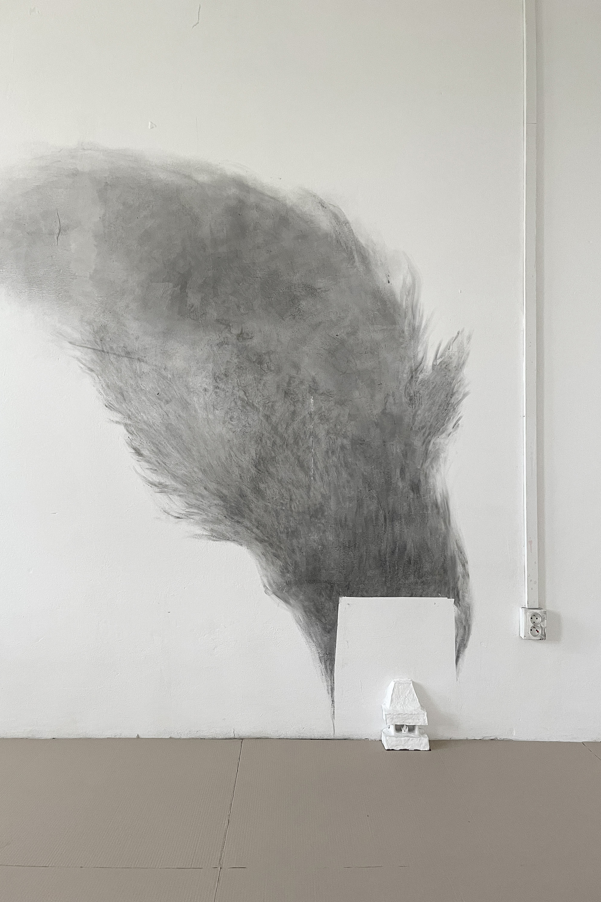
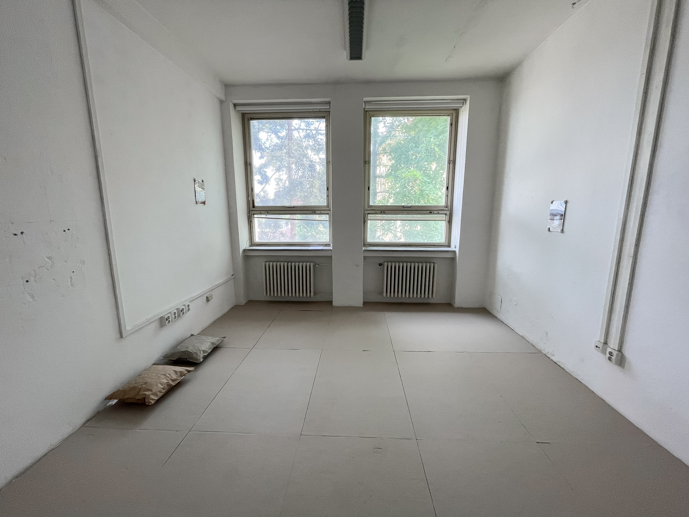
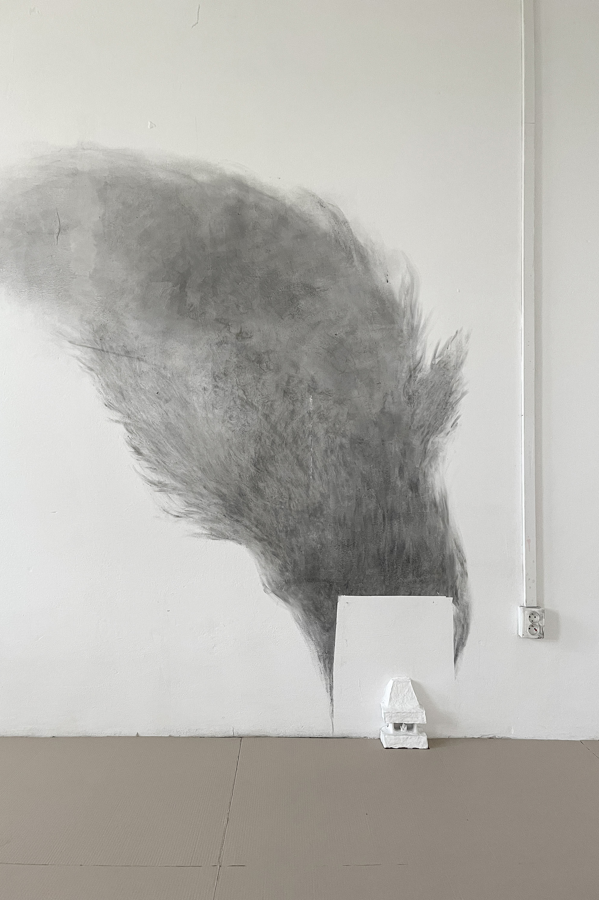
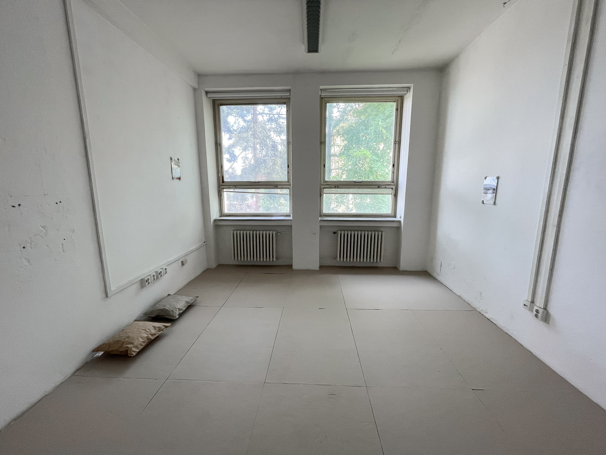

I'm Too Free To Have Vihals, Brno, 2023
installation, 3 photos 21 × 29 cm, hand-shaped clay hooks, cardboard floor with marks, cardboard slippers 6 pairs, clay fireplace, charcoal drawing on wall
"It's like a emptiness, but not empty." Jacques Lacan
In this project we explored the topic of nomadism, the feeling of anxiety about the absence of roots and stability. The starting point was the phenomenon of the invisible presence of elements in our homes that indicate an upcoming move. Moving boxes are the one constant that is truly always with us, as our belongings are more often left in them than unpacked and given their rightful place in the interior. Cardboard roommates constantly remind us that we're not here forever. But there is a desire to inhabit the temporary space, to put down roots in it, at least for a while. Each box has a story to tell, and in addition to its own contents, an inseparable part of it is the label that preserves the history of our move. With the text on the sticker, we wanted to bring the experience of both the contents of the box and its owner closer. The image of the fireplace is present as a memory, a naive dream, a collective sign of comfort and warmth, a fire we want to gather around.
With photography, text and spatial objects, we create a space, empty at first glance, but composed of hints, traces of what was or could have been there.

 


